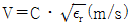
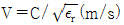
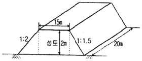
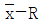
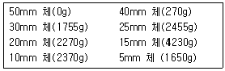
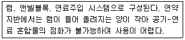
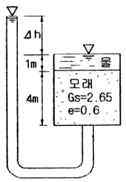
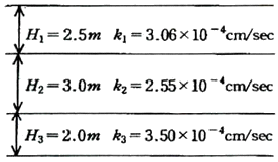
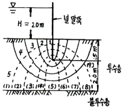
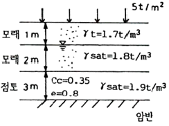

건설재료시험기사 (2009-03-01 기출문제)
1과목: 콘크리트공학
1. 프리스트레스트 콘크리트(PSC)에서 굵은골재의 최대치수는 일반적인 경우 얼마를 표준으로 하는가?
- 15mm
- 25mm
- 40mm
- 50mm
(정답률: 알수없음)

2. 다음 중 수중콘크리트 타설의 원칙에 대한 설명으로 잘못된 것은?
- 콘크리트 타설에서 완전히 물막이를 할 수 없는 경우유속은 1초간 10cm이하로 하는 것이 좋다.
- 콘크리트를 수중에 낙하시키면 재료분리가 일어나므로 콘크리트는 수중에 낙하시켜서는 안 된다.
- 콘크리트가 경화될 때까지 물의 유동을 방지하여야 한다.
- 한 구획의 콘크리트 타설을 완료한 후 레이턴스를 모두 제거하고 다시 타설하여야 한다.
(정답률: 80%)
3. 콘크리트 구조물의 전자파레이더법에 의한 비파괴시험에서 진공 중에서 전자파의 속도를 C, 콘크리트의 비유전율을 εr 이라할 때 콘크리트내의 전자파의 속도 V를 구하는 식으로 맞는 것은?
- V = Cㆍεr(m/s)
- V = C/εr(m/s)


(정답률: 알수없음)
4. 초속경 시멘트에 대한 설명 중 틀린 것은?
- 응결시간이 짧고 경화시 발열이 크다.
- 2~3시간만에 압축강도가 10MPa에 달하는 콘크리트를 만들 수 있다.
- 알루미나 시멘트와 같은 전이 현상이 없다.
- 포틀랜드 시멘트와 혼합하여 사용할 수 있다.
(정답률: 알수없음)
5. 매스(mass)콘크리트의 온도균열을 방지 또는 제어하기 위한 방법으로 잘못된 것은?
- 외부구속을 많이 받는 벽체 구조물의 경우에는 균열유발줄눈을 설치하여 균열발생 위치를 제어하는 것이 효과적이다.
- 콘크리트의 프리쿨링, 파이프쿨링 등에 의한 온도 저하 방법을 사용하는 것이 효과적이다.
- 조강포틀랜드 시멘트 등 조기강도가 큰 시멘트를 사용하여 경화시간을 줄이는 것이 균열 방지에 효과적이다.
- 팽창콘크리트를 사용하여 균열을 방지하는 것이 효과적이다.
(정답률: 알수없음)
6. 굳지않는 콘크리트의 워커빌리티를 측정하기위한 시험방법이 아닌 것은?
- 슬럼프시험
- 앵글러 점도시험
- VB컨시스턴시 시험
- 켈리볼 관입시험
(정답률: 알수없음)
7. 콘크리트의 중성화(탄산화)에 대한 설명으로 잘못된 것은?
- 굳은 콘크리트는 표면에서 공기 중의 이산화탄소의 작용을 받아 수산화칼슘이 탄산칼슘으로 바뀐다.
- 철근주위를 둘러싸고 있는 콘크리트가 주성화하여 물과 공기가 침투하면 철근을 부식시킨다.
- 중성화의 판정은 페놀프탈레인 1%의 알코올용액을 콘크리트의 단면에 뿌려 조사하는 방법이 일반적이다.
- 중성화가 진행된 콘크리트는 알칼리성이 약화되어 콘크리트자체가 팽창하여 파괴된다.
(정답률: 알수없음)
8. 경량골재 콘크리트에 대한 다음 설명 중 틀린 것은?
- 경량골재는 젖은 상태로 사용하는 것이 좋다.
- 경량골재 콘크리트의 탄성계수는 일반 콘크리트보다 작다.
- 경량골재 콘크리트는 같은 배합일 때 일반 콘크리트보다 슬럼프가 크다.
- 경량골재 콘크리트는 가볍지만 장거리 운반에 불리하다.
(정답률: 20%)
9. 물-시멘트 비 50%, 단위수량 170Kg/m3, 단위잔골재량 730kg/m3인 AE콘크리트의 단위굵은골재량은 얼마인가? (단, 시멘트,잔골재 및 굵은골재의 비중은 각각 3.15, 2.60 및 2.65이며, 콘크리트의 단위중량은 2350kg/m3이다.)
- 1065kg/m3
- 1090kg/m3
- 1125kg/m3
- 1150kg/m3
(정답률: 50%)
10. 일정량의 공기연행제를 사용할 때 공기량이 증대되는 경우로 옳은 것은?
- 단위 시멘트량이 많을수록
- 슬럼프가 작을수록
- 콘크리트의 온도가 낮을수록
- 단위 잔골재량이 작을수록
(정답률: 30%)
11. 보통포틀랜드시멘트를 사용한 경우 콘크리트의 표준 습윤양생 기간은? (단, 일평균기온이 10˚C 이상이고 15˚C 미만인 경우)
- 1일 이상
- 3일 이상
- 5일 이상
- 7일 이상
(정답률: 55%)
12. 어떤 실험실에서 제조된 콘크리트에 대해 총 5개의 샘플을 채취하여 재령 28일 압축강도를 측정한 결과, 그 값이 19.5, 19.0, 21.0, 23.5, 22.0PMa이었다. 이들 값에 대해 변동계수를 구하면?
- 6.6%
- 7.0%
- 7.4%
- 7.8%
(정답률: 알수없음)
13. 외기온도가 25˚C를 넘을 때 콘크리트의 비비기로부터 치기가 끝날 때까지 최대 얼마의 시간을 넘어서는 안되는가?
- 0.5시간
- 1시간
- 1.5시간
- 2시간
(정답률: 알수없음)
14. 프리텐션 방식의 프리스트레스트 콘크리트에서 프리스트레싱을 할 때의 콘크리트 압축강도는 얼마 이상이어야 하는가?
- 21MPa
- 24MPa
- 27MPa
- 30MPa
(정답률: 알수없음)
15. 넓이가 넓은 평판구조에서는 두께가 최소 얼마 이상일 때 매스콘크리트로 다루어야 하는가?
- 0.5m
- 0.8m
- 1m
- 1.5m
(정답률: 70%)
16. 굳지 않는 콘크리트의 성질에 대한 설명으로 잘못된 것은?
- 단위시멘트량이 큰 콘크리트일수록 성형성이 좋다.
- 온도가 높을수록 슬럼프는 감소된다.
- 둥근 입형의 잔골재를 사용한 콘크리트는 모가진 부순 모래를 사용한 것에 비해 워커빌리티가 나쁘다.
- 일반적으로 플라이애시를 사용한 콘크리트는 워커빌리티가 개선된다.
(정답률: 알수없음)
17. 알칼리골재반응에 대한 설명으로 잘못된 것은?
- 콘크리트 중의 알칼리 이온이 골재 중의 실리카 성분과 결합하여 발생한다.
- 콘크리트의 치밀도를 증대하면 내부 수분의 이동 및 알발이온의 이동을 방해하므로 알칼리-실리카반응이 발생하기 쉽다.
- 알칼리-실리카반응이 발생하면 콘크리트는 이상 팽창을 일으키며 표면에 불규칙한 균열이 발생하는 등의 구조물 손상이 일어난다.
- 알칼리골재반응의 진행에 필수적인 3요소는 반응성 골재의 존재와 알칼리 및 수분의 공급이다.
(정답률: 알수없음)
18. 콘크리트의 강도에 영향을 미치는 요인에 대한 설명으로 옳지 않은 것은?
- 물-시멘트비가 일정할 때 굵은 골재의 최대치수가 클수록 콘크리트의 강도는 커진다.
- 물-시멘트비가 일정할 때 공기량이 증가하면 압축강도는 감소한다.
- 부순돌을 사용한 콘크리트의 강도는 강자갈을 사용한 콘크리트의 강도보다 크다.
- 성형시에 가압양생하면 콘크리트의 강도가 크게 된다.
(정답률: 알수없음)
19. 거푸집 및 동바리의 구조계산에 관한 설명으로 옳지 않은 것은?
- 고정하중은 철근콘크리트와 거푸집의 중량을 고려하여 합한 하중이며, 철근의 중량을 포함한 콘크리트의 단위중량은 보통콘크리트에서는 24kN/m3을 적용하고, 거푸집 하중은 최소 0.4kN/m3 이상을 적용한다.
- 활하중은 작업원, 경량의 장비하중, 기타 콘크리트 타설에 필요한 자재 및 공구 등의 시공하중, 그리고 충격하중을 포함한다.
- 동바리에 작용하는 수평방향 하중으로는 고정하중의 2% 이상 또는 동바리 상단의 수평방향 단위 길이 당 1.5kN/m 이상 중에서 큰쪽의 하중이 동바리 머리부분에 수평방향으로 작용하는 것으로 가정한다.
- 옹벽과 같은 거푸집의 경우에는 거푸집 측면에 대하여 5.0kN/m2 이상의 수평방향 하중이 작용하는 것으로 본다.
(정답률: 알수없음)
20. 콘크리트의 시방 배합에 대한 설명으로 옳은 것은?
- 배합에 사용된 골재는 표면수 및 흡수량을 고려하여 보정한 배합이다.
- 실제 현장의 조건을 충분히 고려하여 보정한 배합이다.
- 시방서 기준을 따르며 현장 조건도 고려한 배합이다.
- 소정의 품질을 갖는 콘크리트가 얻어지도록 된 배합으로서 시방서 또는 책임기술자가 지시한 배합을 말한다.
(정답률: 알수없음)
2과목: 건설시공 및 관리
21. 다음은 어떤 공사의 품질관리에 대한 내용이다. 가장 먼저 해야 할 일은?
- 품질특성의 선정
- 작업표준의 결정
- 관리한계 설정
- 관리도의 작성
(정답률: 알수없음)
22. 기계화 시공에 있어서 중장비의 비용계산 중 기계 손료를 구성하는 요소가 아닌 것은?
- 관리비
- 상각비
- 인건비
- 정비비
(정답률: 알수없음)
23. 아래의 주어진 조건을 이용하여 3점시간법을 적용하여 activity time을 결정하면? (조건: 표준값 =6시간,낙관값 =3시간, 비관값 =8시간)
- 4.3시간
- 5.2시간
- 5.8시간
- 6.8시간
(정답률: 84%)
24. 공기 케이슨 공법에 대한 다음 설명 중 틀린 것은?
- 비교적 소규모의 공사나 심도가 얕은 기초공에는 경제적이다.
- 고압내에서 작업을 하여 대기압 중에 나올 때 감압 때문에 체액 또는 조직내에 용해되어 있던 질소가스가 기포로 되어 체내에 잔류하기 때문에 케이슨병이 발생할 수 있다.
- 일반적인 굴착 깊이는 35~40m로 제한되어 있다.
- 지하수를 저하시키지 않으며 히빙, 보일링을 방지할 수 있으므로 인접 구조물의 침하 우려가 없다.
(정답률: 알수없음)
25. 다음은 말뚝의 부주면 마찰력(negative friction)에 관한 설명이다. 옳지 않는 것은?
- 말뚝의 주변지반이 말뚝의 침하량 보다 상대적으로 큰 침하를 일으키는 경우 부주면 마찰력이 생긴다.
- 지하수위가 상승할 경우 부주면 마찰력이 생긴다.
- 표면적이 작은 말뚝은 사용하여 부주면 마찰력을 줄일 수 있다.
- 말뚝 직경보다 약간 큰 케이싱을 박아서 부주면 마찰력을 차단할 수 있다.
(정답률: 알수없음)
26. 잔교(landing pier)란 배를 계선하여 육지와 연락하기 위한 다리구조를 말한다. 잔교의 특징에 관한 설명으로 잘못된 것은?
- 토압을 받지 않고 자중이 적으므로 연약지반에 이용할 수 있다.
- 기존 호안이 있는 곳에 안벽을 축조할 때는 횡잔교가 유리하다.
- 수평력에 대한 저항력이 크다.
- 구조적으로 토류사면과 잔교를 조합하는 것이므로 공사비가 많아지는 경우도 있다.
(정답률: 알수없음)
27. 커튼그라우팅(curtain grouting)의 시공목적과 거리가 먼 것은?
- 터널이나 댐에서 침투수를 막기 위해서
- 시공 중 침수에 의한 공사의 지연을 막기 위해서
- 콘크리트 내부의 균열 및 수축검사를 위해서
- 구조물에 작용하는 양압력을 줄이기 위해서
(정답률: 64%)
28. 그림과 같은 단면으로 성토 후 비탈면에 떼붙임을 하려고 한다. 성토량과 떼붙임 면적을 계산하면? (단, 마구리면의 떼붙임은 제외하며, 토량변화율은 무시한다.)

- 성토량 : 650m3 , 떼붙임 면적 : 61.6m2
- 성토량 : 740m3 , 떼붙임 면적 : 161.6m2
- 성토량 : 740m3 , 떼붙임 면적 : 61.6 m2
- 성토량 : 650m3 , 떼붙임 면적 : 161.6m2
(정답률: 80%)
29. 다음 중 옹벽의 뒤채움에 가장 적합한 흙은?
- 점토질흙
- 실트질흙
- 유기질흙
- 모래섞인 자갈
(정답률: 64%)
30. 말뚝의 지지력을 결정하기 위한 방법 중에서 가장 정확한 것은?
- 말뚝의 재하시험
- 정역학적 공식
- 동역학적 공식
- 허용지지력 표로서 구하는 방법
(정답률: 알수없음)
31. 옹벽을 구조적 특성에 따라 분류할 때 여기에 속하지 않는 것은?
- 중력식 옹벽
- Block 쌓기 콘크리트 틀 옹벽
- T형 옹벽
- 부벽식 옹벽
(정답률: 알수없음)
32. 저항선이 1.2m일때 12.15kg의 폭약을 사용하였다면 저항선을 0.8m로 하였을 때는 얼마의 폭약이 필요한가? (단, Hauser식을 사용한다.)
- 1.8kg
- 3.6kg
- 5.6kg
- 7.6kg
(정답률: 알수없음)
33. 다음은 성토에 사용되는 흙의 조건에 관한 설명이다. 옳지 않은 것은?
- 다루기가 쉬워야 한다.
- 충분한 전단강도를 가져야 한다.
- 도로성토에서는 투수성이 양호해야 한다.
- 가급적 점토성분을 많이 포함하고 자갈 및 왕모래 등은 적어야 한다.
(정답률: 55%)
34. 시멘트 콘크리트 포장시공에 있어서 초기균열을 방지하는 대책에 대하여 틀린 것은?
- 고온의 시멘트를 사용하지 않는다.
- 노반마찰을 적게 한다.
- 도로성토에서는 투수성이 양호해야 한다.
- 가급적 점토성분을 많이 포함하고 자갈 및 왕모래 등은 적어야 한다.
(정답률: 알수없음)
35. 지중연속벽 공법에 관한 설명 중 옳지 않은 것은?
- 주변지반의 침하를 방지할 수 있다.
- 시공시 소음, 진동이 크다.
- 벽체의 강성이 높고 지수성이 좋다.
- 큰지지력을 얻을 수 있다.
(정답률: 알수없음)
36. 시멘트 콘크리트포장의 설명 중 옳지 않는 것은?
- 표층의 콘크리트 슬래브가 교통하중에 의해 발생되는 휨 응력에 저항한다.
- 승차감이나 저소음 효과가 우수하여 쾌적하다.
- 부분적인 보수가 곤란하다.
- 재료구입이 용이하다.
(정답률: 80%)
37.

품질관리도에서 1조의 측정치가 9, 7, 12, 13의 값을 가지며 2조의 측정치가 8, 9, 10, 12의 값을 가질때 중심(CL)의 값은?- 9.75
- 10.00
- 10.25
- 10.50
(정답률: 알수없음)
38. 0.7m3의 백호 1대를 사용하여 10000m3의 기초굴착을 시행할 때 굴착에 요하는 일수는? (단, 백호의 사이클 타임은 0.5min, dipper 계수는 0.9, 토량 변화율은 1.2, 작업 능률은 0.8, 1일의 운전 시간은 8시간이다.)
- 23일
- 25일
- 27일
- 29일
(정답률: 67%)
39. 기계위치보다 낮거나 높은 곳도 굴착이 가능하여 주로 넓은 범위의 굴착시 사용되고 수로, 하상굴착 EH는 골재 채취에 이용되는 셔블계 굴착기는?
- 백호우
- 드래그라인
- 파워셔블
- 크램셀
(정답률: 알수없음)
40. 발파에 의해 생긴 큰 암석 덩어리를 조각내는 2차 공법이 아닌 것은?
- 블록보링(block boring)
- 스네이크 보링(snake boring)
- 머드캐핑(mud capping)
- 벤치컷(bench cut)
(정답률: 알수없음)
3과목: 건설재료 및 시험
41. 플라스탁의 일반적인 특성에 대한 설명으로 적당하지 못한 것은?
- 내수성, 내습성, 내식성이 좋다.
- 전기절연성이 좋다.
- 가볍고 강도가 좋다.
- 열에 의한 변형이 적고 강하다.
(정답률: 80%)
42. 제철소에서 발생하는 산업부산물로서 찬공기나 냉수로 급냉한 후 미분쇄하여 사용하는 혼화재는?
- 고로슬래그 미분말
- 플라이애시
- 화산회
- 실리카흄
(정답률: 70%)
43. 포틀랜드 시멘트의 주요 화학성분 중 많이 함유하고 있는 순서로 나타낸 것으로 옳은 것은?
- 산화칼슘(CaO) ＞ 이산화규소(SiO2) ＞ 산화알루미늄(Al2O3)
- 이산화규소(SiO2) ＞ 산화알루미늄(Al2O3) ＞ 산화칼슘(CaO)
- 산화알루미늄(Al2O3) ＞ 산화칼슘(CaO) ＞ 이산화규소(SiO2)
- 산화칼슘(CaO) ＞ 산화알루미늄(Al2O3) ＞ 이산화규소(SiO2)
(정답률: 알수없음)
44. 시멘트 조성 광물에서 수축률이 가장 큰 것은?
- C3S
- C3A
- C4AF
- C2S
(정답률: 알수없음)
45. 다음은 굵은 골재의 체가름 시험을 행한 후 각 체에 남은 양들이다. 굵은 골재의 조립율과 최대 치수는?

- 조립율 8.52, 최대치수 25mm
- 조립율 8.52, 최대치수 40mm
- 조립율 7.36, 최대치수 40mm
- 조립율 7.36, 최대치수 25mm
(정답률: 알수없음)
46. 다음 설명 중 틀린 것은?
- 혼화재(混和材)에는 플라이 애쉬(fly-ash), 고로 슬래그(slag), 규산백토 등이 있다.
- 혼화재(混和材)에는 AE제, 경화촉진제, 방수제 등이 있다.
- 혼화재(混和材)는 그 사용량이 비교적 적어서 그 자체의 부피가 콘크리트 배합의 계산에서 무시하여도 좋다.
- AE제에 의해 만들어진 공기를 연행공기라 한다.
(정답률: 알수없음)
47. 표점거리 L=50mm, 직경 D=14mm의 원형단면봉을 가지고 인장시험을 하였다. 축인장하중 P=100kN이 작용하였을 때, 표점거리 L' =50.433mm 와 직경 D'=13.970mm 가 측정되었다면 이 재료의 푸아송비(μ)는?
- 0.07
- 0.247
- 0.347
- 0.5
(정답률: 알수없음)
48. 포장용 타르의 특성을 설명한 것으로 틀린 것은?
- 액체에서 반고체 상태를 가지며, 특유한 냄새가 난다.
- 비중은 1.1~1.25정도로 스트레이트 아스팔트보다 약간 크다.
- 투수성, 흡수성은 아스팔트보다 크다.
- 내유성이 아스팔트보다 좋다.
(정답률: 알수없음)
49. 토목구조용 석재에 대한 설명 중 옳은 것은?
- 화성암에는 주로 화강암, 현무암, 사암 등이 있다.
- 변성암에는 편마암, 편암, 대리석 등이 있다.
- 혈암은 퇴적암의 일종으로 점토가 완전하게 응고된 것으로 부드럽고 색조가 일정하다.
- 응회암은 흡수성이 작아서 강도가 크나, 내화력이 작다.
(정답률: 알수없음)
50. 양질의 포졸란을 사용한 콘크리트의 일반적인 특징으로 보기 어려운 것은?
- 워커빌리티가 향상된다.
- 블리딩 현상이 감소한다.
- 발열량이 적어지므로 단면이 큰 콘크리트에 적합하다.
- 초기강도는 크나 장기강도가 작아진다.
(정답률: 알수없음)
51. 건설용 재료로 목재를 사용하기 위하여 목재를 건조시키는 목적 및 효과로 틀린 것은?
- 목재의 중량을 경감시킬 수 있다.
- 균류의 발생을 방지할 수 있다.
- 수축균열 및 부정변형을 방지할 수 있다.
- 가공성을 향상 시킨다.
(정답률: 알수없음)
52. 아스팔트의 연경도(Consistency)에 가장 큰 영향을 미치는 것은?
- 비중
- 인화점
- 연화점
- 온도
(정답률: 알수없음)
53. 주로 화성암에 많이 생기는 절리(joint)로 돌기둥을 배열 한 것 같은 모양의 절리를 무엇이라 하는가?
- 주상절리
- 구상절리
- 불규칙 다면괴상절리
- 판상절리
(정답률: 알수없음)
54. 다음 포틀랜드시멘트 중 건조수축이 가장 작은 시멘트는?
- 보통포틀랜드시멘트
- 백색포틀랜드시멘트
- 조강포틀랜드시멘트
- 중용열포틀랜드시멘트
(정답률: 알수없음)
55. 골재의 입도(粒度)에 대한 설명으로 적당하지 못한 것은?
- 입도시험을 위한 골재는 4분법(4分法)이나 시료 분취기에 의하여 필요한 량을 채취한다.
- 입도란 크고 작은 골재알이 혼합되어 있는 정도를 말하며 체가름 시험에 의하여 구할 수 있다.
- 입도가 좋은 골재를 사용한 콘크리트는 공극이 커지기 때문에 강도가 저하한다.
- 입도곡선이란 골재의 체가름 시험결과를 곡선으로 표시한 것이며 입도곡선이 표준입도곡선 내에 들어가야 한다.
(정답률: 84%)
56. 흑색화약에 대한 설명 중 옳지 않는 것은?
- 비중이 1.5~1.8정도이고, 폭파시 2000˚C의 고온과 6.6t/cm2정도의 압력이 발생한다.
- 보관과 취급이 간편하고 흡수성이 크다.
- 수중폭파가 불가능하고 연소시 연기가 많이 난다.
- 니트로셀룰로오스 또는 니트로셀룰로오스와 니트로글리세린을 주성분으로 하는 화학이다.
(정답률: 알수없음)
57. 골재의 함수상태에서 유효흡수량을 바르게 설명한 것은?
- 절대건조 상태와 공기 중 건조상태 사이의 함수량을 뜻한다.
- 공기 중 건조상태와 표면건조 포화상태 사이의 함수량을 뜻한다.
- 표면건조 포화상태와 습윤상태 사이의 함수량을 뜻한다.
- 절대건조 상태와 습윤상태 사이의 함수량을 뜻한다.
(정답률: 알수없음)
58. 금속재료에 대한 설명으로 옳지 않은 것은?
- 강의 제조방법에는 평로법, 전로법, 전기로법 등이 있다.
- 강의 열처리는 풀림, 불림, 담금질, 뜨임으로 크게 나누어 진다.
- 저탄소강은 탄소함유량이 0.3%이하이다.
- 구리에 아연 40%를 첨가하여 제조한 합금을 청동이라고 한다.
(정답률: 알수없음)
59. 대폭파 또는 수중폭파 등 동시 폭파할 경우 뇌관대신 사용하는 것은?
- 도화선
- 도폭선
- 전기뇌관
- 첨장약
(정답률: 64%)
60. 고무 혼입 아스팔트(rubber ized asphalt)가 스트레이트 아스팔트에 비해 가지고 있는 장점이 아닌것은?
- 감온성이 크다.
- 응집성이 크다.
- 충격저항이 크다.
- 마찰계수가 크다.
(정답률: 73%)
4과목: 토질 및 기초
61. 다음은 말뚝을 시공할 때 사용되는 해머에 대한 설명이다. 어떤 해머에 대한 것인가?

- 증기해머
- 진동해머
- 디젤해머
- 드롭해머
(정답률: 알수없음)
62. 흙의 물리적 성질 중 잘못된 것은?
- 점성토는 흙 구조 배열에 따라 면모구조와 이산구조로 대별하는데, 면모구조가 전당강도가 크고 투수성이 크다.
- 점토는 확산 이중층까지 흡착되는 흡착수에 의해 점성을 띤다.
- 소성지수가 클수록 비배수성이 된다.
- 활성도가 클수록 안정해지며 소성지수가 작아진다.
(정답률: 알수없음)
63. 다음 그림과 같이 물이 흙 속으로 아래에서 침투할 때 분사현상이 생기는 수두차(△h)는 얼마인가?

- 1.16m
- 2.27m
- 3.58m
- 4.13m
(정답률: 알수없음)
64. Paper Drain설계시 Drain Paper의 폭이 10cm, 두께가 0.3cm일 때 드레인 페이퍼의 등치환산원의 직경이 얼마이면 Sand Drain과 동등한 값으로 볼 수 있는가? (단, 형상계수 : 0.75)
- 5cm
- 7.5cm
- 10cm
- 15cm
(정답률: 40%)
65. 모래의 밀도에 따라 일어나는 전단특성에 대한 다음 설명 중 옳지 않는 것은?
- 다시 성형한 시료의 강도는 작아지지만 조밀한 모래에 서는 시간이 경과됨에 따라 강도가 회복 된다.
- 전단저항각 [내부마찰각(ø)]은 조밀한 모래일수록 크다.
- 직접 전단시험에 있어서 전단응력과 수평변위 곡선은 조밀한 모래에서는 peak가 생긴다.
- 조밀한 모래에서는 전단변형이 계속 진행되면 부피가 팽창한다.
(정답률: 알수없음)
66. 그림과 같이 3층으로 되어 있는 성층토의 수평방향의 평균 투수계수는?

- 2.97×10-4cm/sec
- 3.04×10-4cm/sec
- 6.97×10-4cm/sec
- 4.04×10-4cm/sec
(정답률: 55%)
67. 실내시험에 의한 점토의 강도 증가율(Cu/P)산정 방법이 아닌 것은?
- 소성지수에 의한 방법
- 비배수 전단강도에 의한 방법
- 압밀비배수 삼축압축시험에 의한 방법
- 직접전단시험에 의한 방법
(정답률: 알수없음)
68. 어떤 점토의 토질실험 결과 일축압축강도 0.48kg/cm2, 단 위중량 1.7t/m3이었다. 이점토의 한계고는?
- 6.34m
- 4.87m
- 9.24m
- 5.65m
(정답률: 알수없음)
69. 흙의 일축압축 강도시험에 관한 설명 중 옳지 않은 것은?
- Mohr원이 하나밖에 그려지지 않는다.
- 점성이 없는 사질토의 경우는 시료자립이 어렵고 배수상태를 파악할 수 없어 일반적으로 점성토에 주로 사용된다.
- 배수조건에서의 시험결과 밖에 얻지 못한다.
- 일축압축 강도시험으로 결정할 수 있는 시험 값으로는 일축압축 강도, 예민비, 변형계수 등이 있다.
(정답률: 알수없음)
70. 현장다짐을 실시한 후 들밀도시험을 수행하였다. 파낸 흙의 체적과 무게가 각각 365.0cm3, 745g이었으며, 함수비는 12.5%였다. 흙의 비중이 2.65이며, 실내표준다짐시 최대건조단위 중량이 γdmax = 1.90t/m3일 때 상대다짐도는?
- 88.7%
- 93.1%
- 95.3%
- 97.8%
(정답률: 알수없음)
71. 깊은 기초의 지지력 평가에 관한 설명 중 잘못된 것은?
- 정역학적 지지력 추정방법은 논리적으로 타당하나 강도정수를 추정하는데 한계성을 내포하고 있다.
- 동역학적 방법은 항타장비, 말뚝과 지반조건이 고려된 방법으로 해머 효율의 측정이 필요하다.
- 현상 타설 콘크리트 말뚝 기초는 동역학적 방법으로 지지력을 추정한다.
- 말뚝 항타분석기(PDA)는 말뚝의 응력분포, 경시효과 및 해머 효율을 파악할 수 있다.
(정답률: 알수없음)
72. 다짐에 대한 설명 중 옳지 않는 것은?
- 세립토의 비율이 클수록 최적함수비는 증가한다.
- 세립토의 비율이 클수록 최대건조 단위중량은 증가한다.
- 다짐에너지가 클수록 최적함수비는 감소한다.
- 최대건조 단위중량은 사질토에서 크고 점성토에서 작다.
(정답률: 알수없음)
73. 그림과 같은 경우의 투수량은? (단, 투수지반의 투수계수는 2.4⨉10-3cm/sec이다.)

- 0.0267cm3/sec
- 0.267cm3/sec
- 0.846cm3/sec
- 0.0846cm3/sec
(정답률: 알수없음)
74. 토압론에 관한 다음 설명 중 틀린 것은?
- Coulomb의 토압론은 강체역학에 기초를 둔 흙쐐기 이론이다.
- Rankine의 토압론은 소성이론에 의한 것이다.
- 벽체가 배면에 있는 흙으로부터 떨어지도록 작용하는 토압을 수동토압이라 하고 벽체가 흙쪽으로 밀리도록 작용하는 힘을 주동토압이라 한다.
- 정지 토압계수의 크기는 수동토압계수와 주동토 압계수사이에 속한다.
(정답률: 알수없음)
75. 연약한 점성토의 지반특성을 파악하기 위한 현장조사 시험 방법에 대한 설명 중 틀린 것은?
- 현장베인시험은 연약한 점토층에서 비배수 전단강도를 직접 산정할 수 있다.
- 정적콘관입시험(CPT)은 콘지수를 이용하여 비배수 전단강도 추정이 가능하다.
- 표준관입시험에서의 N값은 연약한 점성토 지반특성을 잘 반양해 준다.
- 정적콘관입시험(CPT)은 연속적인 지층분류 및 전당강도 추정 등 연약점토 특성분석에 매우 효과적이다.
(정답률: 알수없음)
76. Mohr 응력원에 대한 설명 중 옳지 않는 것은?
- 임의 평면의 응력상태를 나타내는데 매우 편리하다.
- 평면기점(origin of plane, Op)은 최소주응력을 나타내는 원호상에서 최소주응력면과 평행선이 만나는 점을 말한다.
- σ1과 σ3의 차의 백터를 반지름으로 해서 그린 원이다.
- 한 면에 응력이 작용하는 경우 전단력이 0이면, 그 연직응력을 주 응력으로 가정한다.
(정답률: 알수없음)
77. 흙의 비중이 2.60, 함수비 30%, 간극비 0.80일때 포화도는?
- 24.0%
- 62.4%
- 78.0%
- 97.5%
(정답률: 알수없음)
78. 압밀이론에서 선행압밀하중에 대한 설명 중 옳지 않은 것은?
- 현재 지반 중에서 과거에 받았던 최대의 압밀하중이다.
- 압밀소요시간의 추정이 가능하여 압밀도 산정에 사용된다.
- 주로 압밀시험으로부터 작도한 e-log P곡선을 이용하여 구할 수 있다.
- 현재의 지반 응력상태를 평가할 수 있는 과압밀비 산정시 이용된다.
(정답률: 알수없음)
79. 사용그림과 같은 지층단면에서 지표면에 가해진 5t/m2의 상재하중으로 인한 점토층(정규압밀점토)의 1차압밀 최종침하량(S)를 구하고, 침하량이 5cm일때 평균압밀도(U)를 구하면?

- S= 18.5cm, U=27%
- S= 14.7cm, U=22%
- S= 18.5cm, U=22%
- S= 14.7cm, U=27%
(정답률: 50%)
80. 부마찰력에 대한 설명으로 틀린 것은?
- 부마찰력을 줄이기 위하여 말뚝표면을 아스팔트등으로 코팅하여 타설한다.
- 지하수의 저하 또는 압밀이 진행중인 연약지반에서 부마찰력이 발생한다.
- 점성토 위에 사질토를 성토한 지반에 말뚝을 타설한 경우에 부마찰력이 발생한다.
- 부마찰력은 말뚝을 아래 방향으로 작용하는 힘이므로 결국에는 말뚝의 지지력을 증가시킨다.
(정답률: 알수없음)